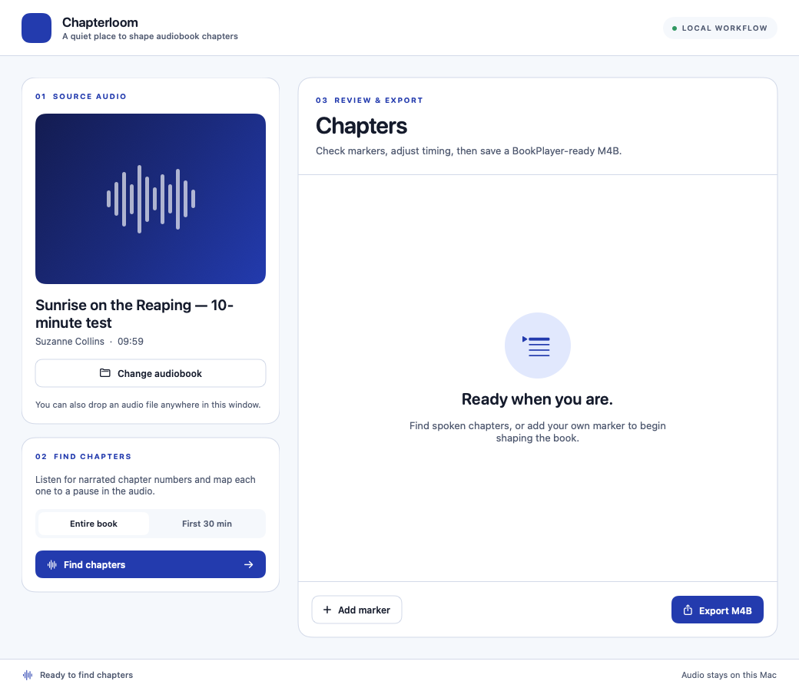
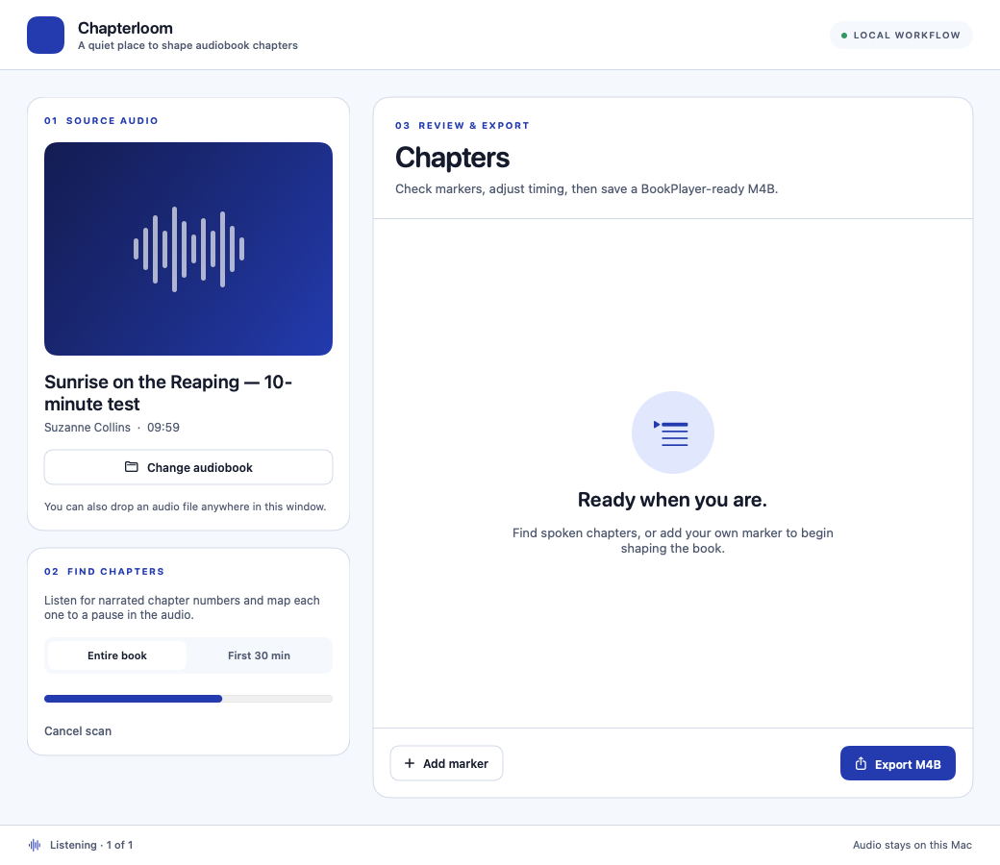
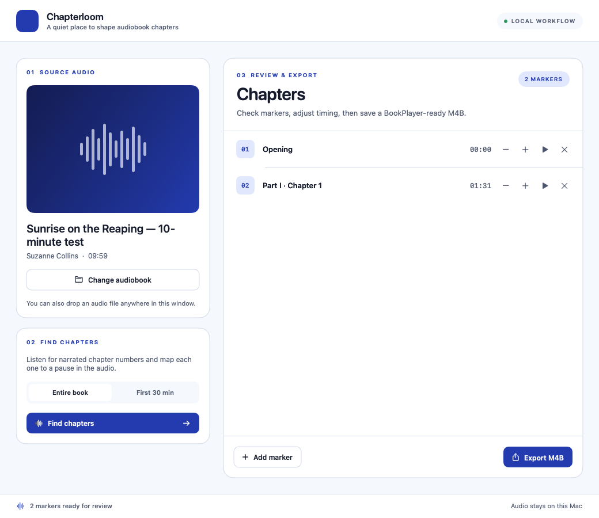
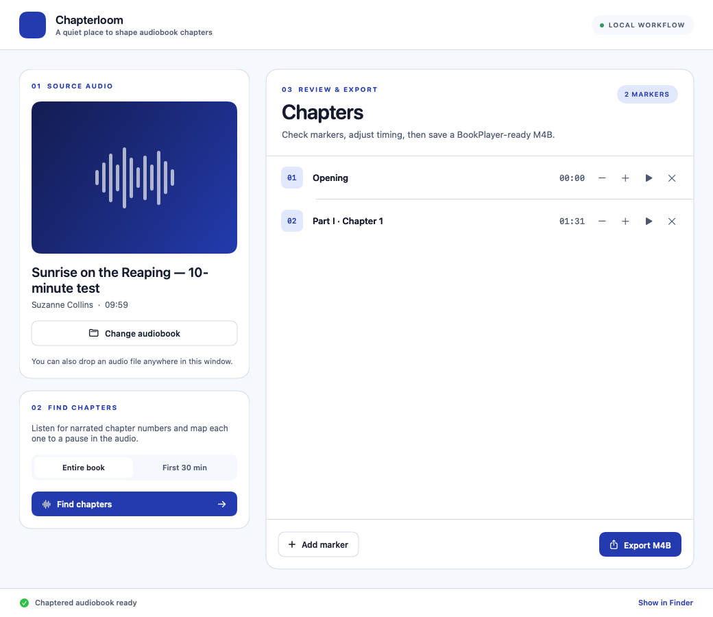

Bring your book.
Drop an M4A, M4B, or MP3. Chapterloom reads its existing title, author, and cover art.
One long audio file. Dozens of spoken chapters. Chapterloom listens locally, finds the boundaries, and gives you the final say before saving a BookPlayer-ready M4B.
Four moments from Chapterloom’s local workflow.

Title, author, and duration appear beside the chapter finder.

Progress stays visible while the model listens.

Rename, preview, add, or adjust chapter boundaries.

Ready for your existing audiobook player.
Screens rendered from the app with the verified 10-minute Sunrise on the Reaping test data. No audiobook audio is included.
Drop an M4A, M4B, or MP3. Chapterloom reads its existing title, author, and cover art.
A local speech model spots narrated chapter numbers. Scan the full book or try the first 30 minutes.
Preview, rename, add, and place markers at exact times. Export a chaptered M4B when it feels right.
Chapterloom is a focused macOS utility for the audiobook library you already own.
Explore the screenshots